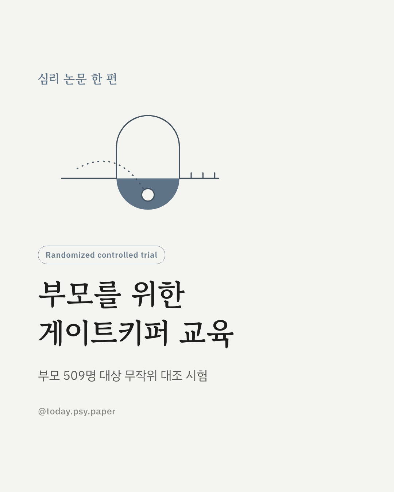
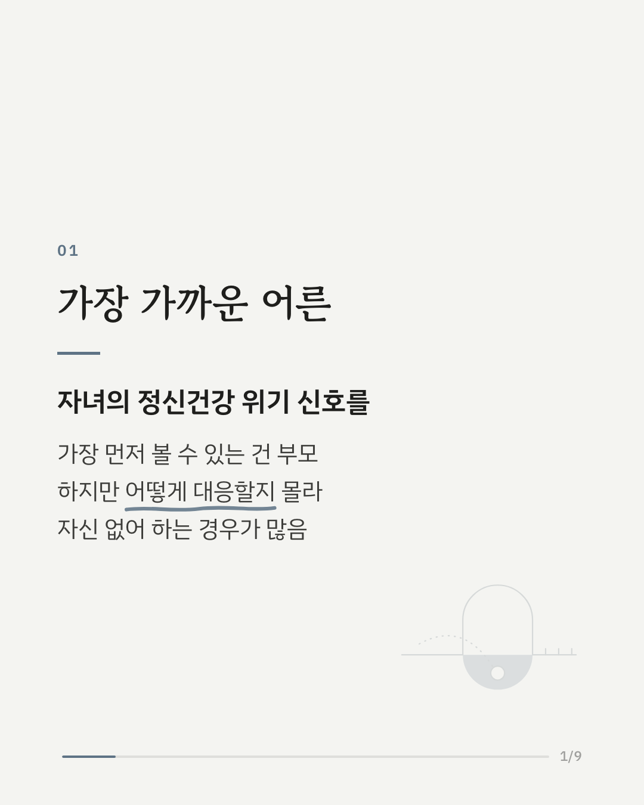
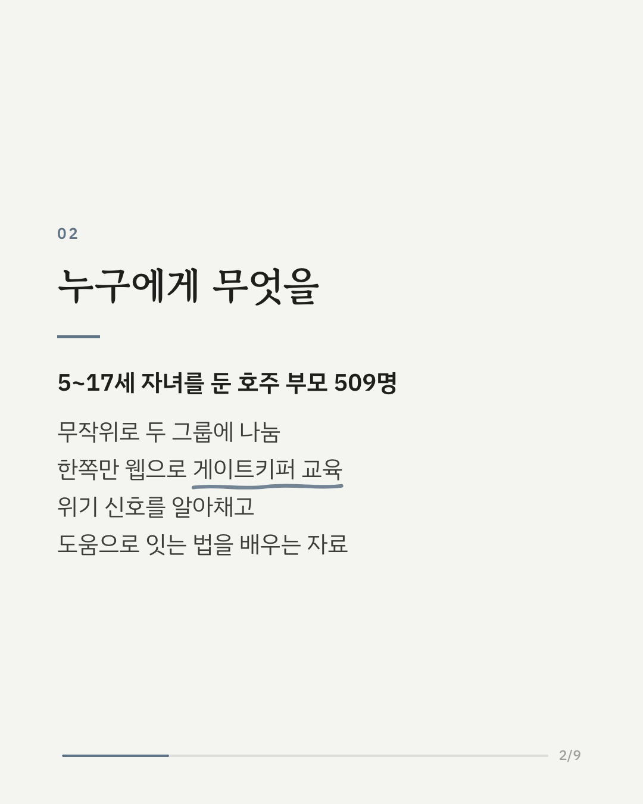
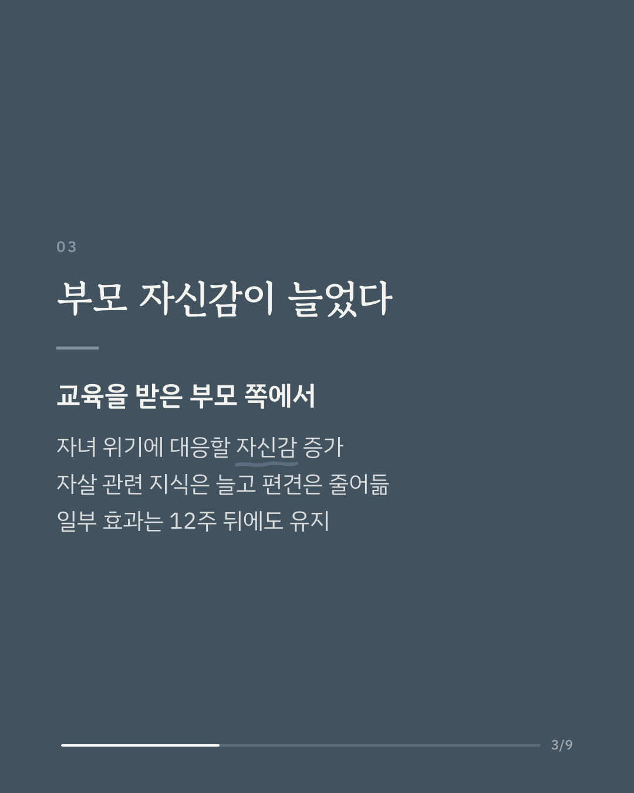
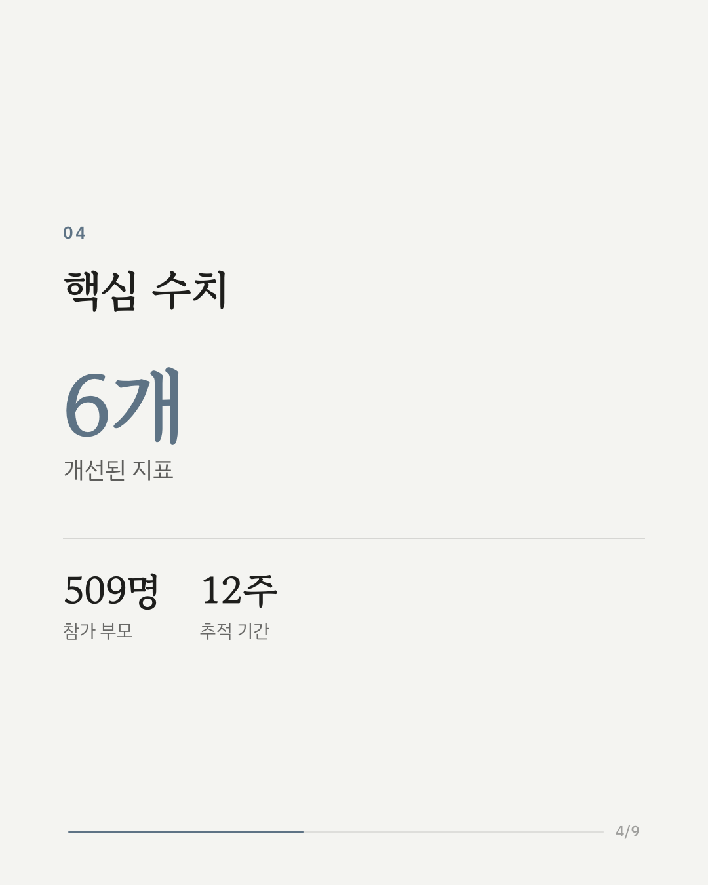
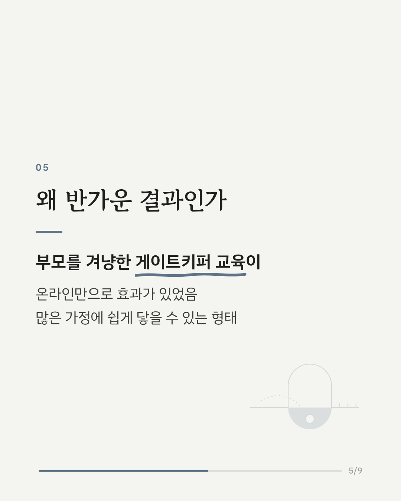
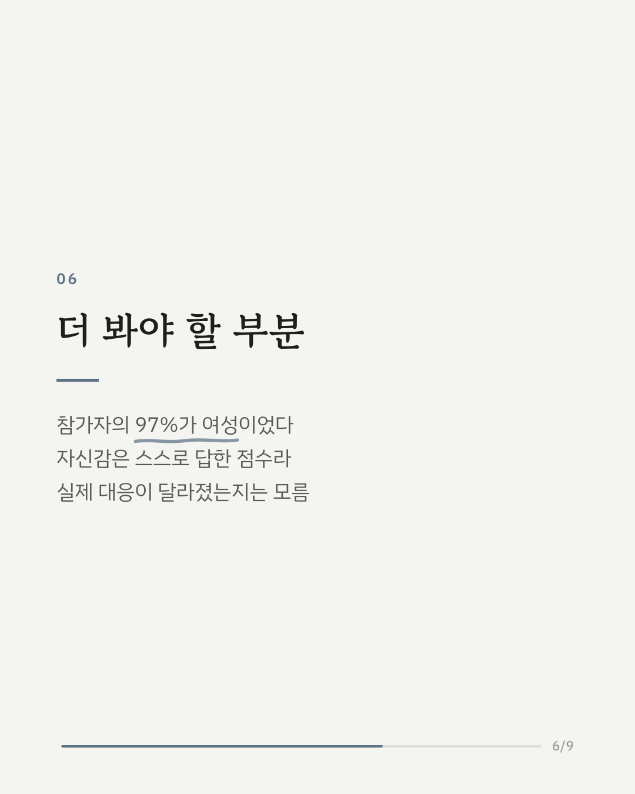
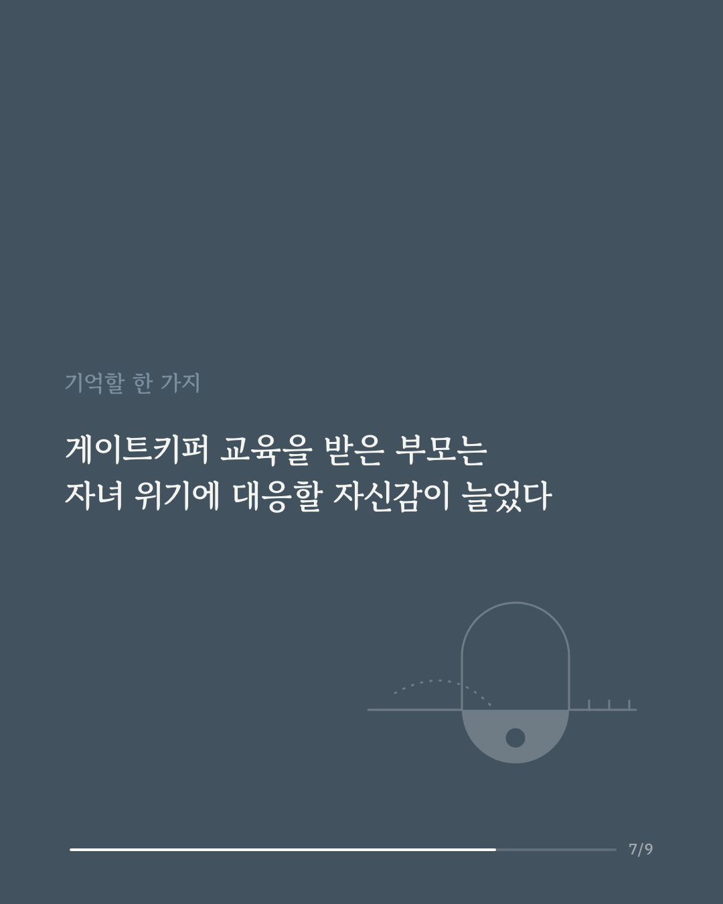
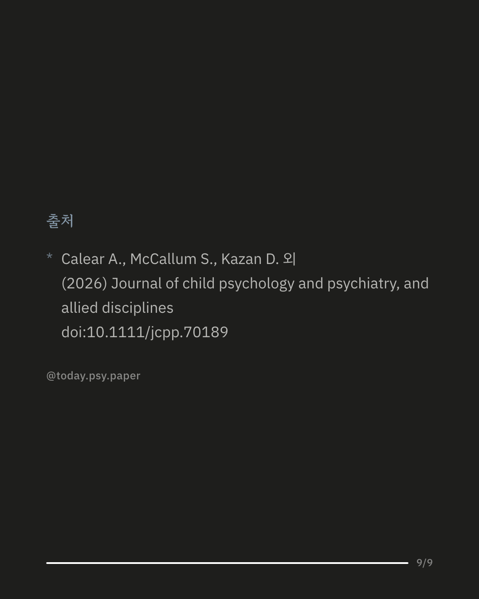

자녀의 정신건강 위기나 자해·자살 위험 신호를 가장 먼저 알아챌 수 있는 사람은 부모입니다. 하지만 막상 그런 신호를 마주했을 때 어떻게 대응해야 할지 몰라 자신 없어 하는 부모가 많습니다. 호주 연구진은 5~17세 자녀를 둔 부모 509명을 무작위로 두 그룹으로 나누고, 한쪽에만 위기 신호를 알아채고 도움으로 이어 주는 웹 기반 게이트키퍼 교육을 제공했습니다. 교육 직후, 교육을 받은 부모는 자녀의 정신건강 문제와 자살 위험에 대응할 자신감이 더 높았고, 자살에 대한 지식은 늘고 편견은 줄었습니다. 도움을 구할 때 느끼는 걸림돌도 줄었으며, 일부 효과는 12주 뒤에도 유지되었습니다. 다만 도움을 구하려는 태도나 의향 자체는 달라지지 않았습니다. 참가자의 97%가 여성이었고, 자신감은 부모가 스스로 답한 점수여서 실제 대응이 달라졌는지는 확인되지 않았습니다. 출처: Journal of Child Psychology and Psychiatry (2026), 'Randomised controlled trial of a web-based mental health, self-harm and suicide gatekeeper resource for parents and caregivers' DOI: 10.1111/jcpp.70189 힘든 마음이 들 때는 자살예방상담전화 109, 정신건강상담전화 1577-0199에서 도움을 받을 수 있습니다. #자살예방 #게이트키퍼 #자녀정신건강 #청소년정신건강 #부모교육 #정신건강정보 #임상심리 #심리학연구
python3 publish.py 42281529